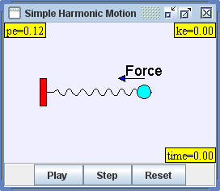

Consider a mass m situated at the end of a spring of length L with negligible mass. Hooke's Law states states that the reaction of the spring is proportional to its displacement x from the equilibrium point , Fspring = -k x , where k is a constant which depends on the physical characteristics of the spring. Applying Newton's Second Law leads to the following second order differential equation
d2x / dt2 = -(k/m) x .
This equation occurs frequently through the sciences and produces simple harmonic motion. Because the solution depends only on the ratio k/m and because this ratio is always a positive number, the differential equation is usually recast in terms of an angular frequency parameter ω = (k/m)1/2 .
d2x / dt2 = - ω2 x
The analytic solution to this differential equation is well know and can be expressed in terms of a sinusoidal function
x(t) = A sin( ωt + φ )
where the amplitude A is the maximum displacement and the phase angle φ is determines that location of mass at time t=0. The angular frequency is measured in radians per second and related to the frequency of oscillation by ω= 2 π f.
The Simple Harmonic Oscillator (SHO) model is designed to teach Ejs modeling. Right click within the simulation to examine this model in the Ejs modeling and authoring tool. See:
The Easy Java Simulations (EJS) manual can be downloaded from the ComPADRE Open Source Physics collection and from the Ejs website.
This simulation was created by Wolfgang Christian and Francisco Esquembre using the Easy Java Simulations (Ejs) modeling tool. You can examine and modify this simulation if you have Ejs installed by right-clicking within a plot and selecting "Open Ejs Model" from the pop-up menu. Information about Ejs is available at: <http://www.um.es/fem/Ejs/>.